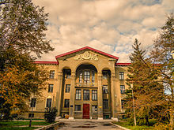

|
Горловcкий район занимает территорию 422 км², из них около 150 км² — территория города Горловки. На одного жителя приходится 340 м² зелёных насаждений.  г.Горловка Имеется 3 административных района:
В городе имеются Комитеты самоорганизации населения — в Никитовском районе их шесть, в Калининском – тринадцать, в Центрально-Городском – десять. |